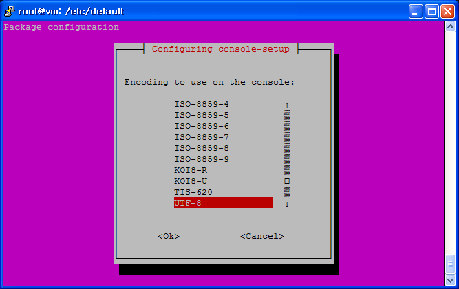

02. 한국어 설정

서버 언어 확인
가장 먼저 영어는 기본으로 지원이 되고, 한국어가 지원되는지 확인해야한다.
root@vm:~# echo $LANG en_US
en_US.utf8를 지원하기 때문에 정상적으로 한글을 사용하는데는 문제가 없다.
root@vm:~# locale -a | grep en_US en_US en_US.iso88591 en_US.utf8
한국어 언어 변경
다양한 방법이 있지만, locale-gen을 추천한다.
root@vm:~# locale-gen ko_KR.UTF-8 Generating locales... ko_KR.UTF-8... done Generation complete.
제대로 나오는지 확인해보자.
root@vm:~# date 2015. 02. 20. (금) 06:50:18 CST
한국어 폰트(font) 설정
자유로운 저작권 폰트(ex 나눔)를 다운로드 받아 리눅스 폰트 폴더로 이동한다.
root@vm:~# ls NanumBrush.ttf NanumGothicExtraBold.ttf NanumMyeongjoExtraBold.ttf NanumGothic.ttf NanumMyeongjo.ttf NanumPen.ttf NanumGothicBold.ttf NanumMyeongjoBold.ttf test.txt root@vm:~# mv *.ttf /usr/share/fonts root@vm:~# ls /usr/share/fonts/ NanumBrush.ttf NanumGothicExtraBold.ttf NanumMyeongjoExtraBold.ttf NanumGothic.ttf NanumMyeongjo.ttf NanumPen.ttf NanumGothicBold.ttf NanumMyeongjoBold.ttf truetype
폰트를 갱신하고, 확인한다.
root@vm:~# fc-cache -f -v root@vm:~# fc-list /usr/share/fonts/truetype/dejavu/DejaVuSerif-Bold.ttf: DejaVu Serif:style=Bold /usr/share/fonts/truetype/dejavu/DejaVuSansMono.ttf: DejaVu Sans Mono:style=Book /usr/share/fonts/NanumGothicExtraBold.ttf: 나눔고딕,NanumGothic,NanumGothicExtraBold,나눔고딕 ExtraBold:style=Bold,ExtraBold,Regular /usr/share/fonts/truetype/dejavu/DejaVuSans.ttf: DejaVu Sans:style=Book /usr/share/fonts/truetype/dejavu/DejaVuSans-Bold.ttf: DejaVu Sans:style=Bold /usr/share/fonts/NanumPen.ttf: 나눔손글씨 펜,Nanum Pen Script:style=Regular /usr/share/fonts/truetype/dejavu/DejaVuSansMono-Bold.ttf: DejaVu Sans Mono:style=Bold /usr/share/fonts/NanumGothicBold.ttf: 나눔고딕,NanumGothic:style=Bold /usr/share/fonts/NanumBrush.ttf: 나눔손글씨 붓,Nanum Brush Script:style=Regular /usr/share/fonts/NanumMyeongjoExtraBold.ttf: 나눔명조,NanumMyeongjo,NanumMyeongjoExtraBold,나눔명조 ExtraBold:style=ExtraBold,Regular /usr/share/fonts/NanumMyeongjo.ttf: 나눔명조,NanumMyeongjo:style=Regular /usr/share/fonts/NanumGothic.ttf: 나눔고딕,NanumGothic:style=Regular /usr/share/fonts/truetype/dejavu/DejaVuSerif.ttf: DejaVu Serif:style=Book /usr/share/fonts/NanumMyeongjoBold.ttf: 나눔명조,NanumMyeongjo:style=Bold
시스템 한국어 폰트(font) 적용
$ sudo dpkg-reconfigure console-setup